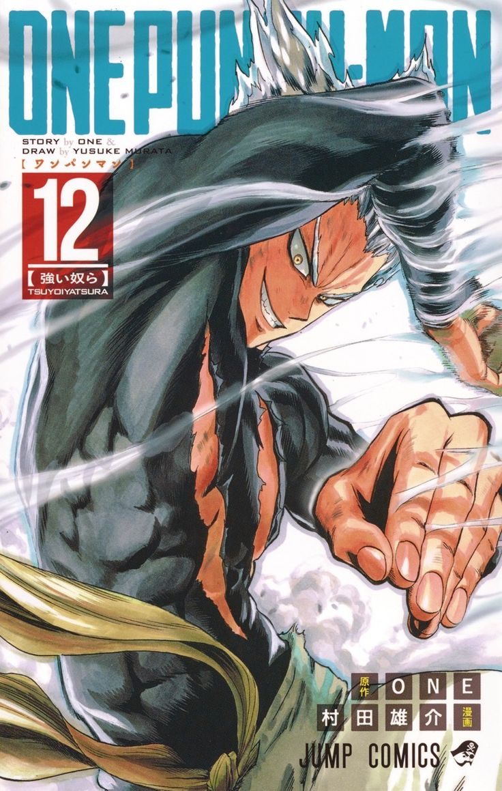
¿One Punch Man De Que Trata?
Saitama es un superhéroe calvo que puede derrotar a cualquier enemigo con un solo golpe. Aunque su fuerza es insuperable, se siente aburrido y vacío por la falta de desafíos. La historia combina acción intensa con una fuerte dosis de comedia y parodia del género de superhéroes y shonen.
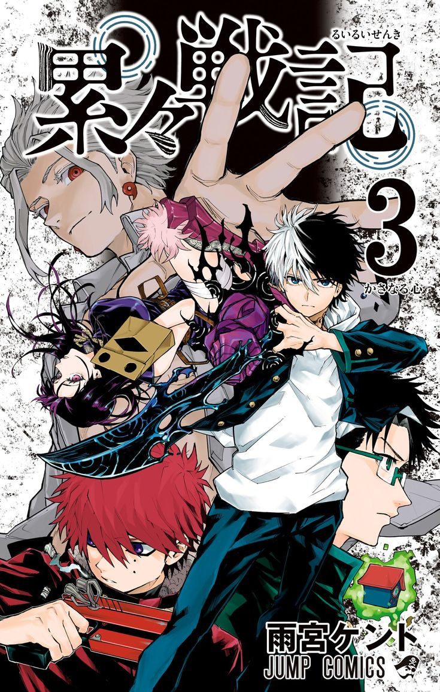
¿Ruirui Senki De Que Trata?
Junta Shiraishi es un estudiante tan callado y discreto que sus compañeros apenas notan que existe... hasta que aparece Nagisa Kubo, una compañera extrovertida que se interesa por él y empieza a sacarlo de su “invisibilidad”. Con juegos, bromas y un encanto especial, Kubo transforma poco a poco su día a día en momentos únicos, dando lugar a una historia dulce de amistad y romance.
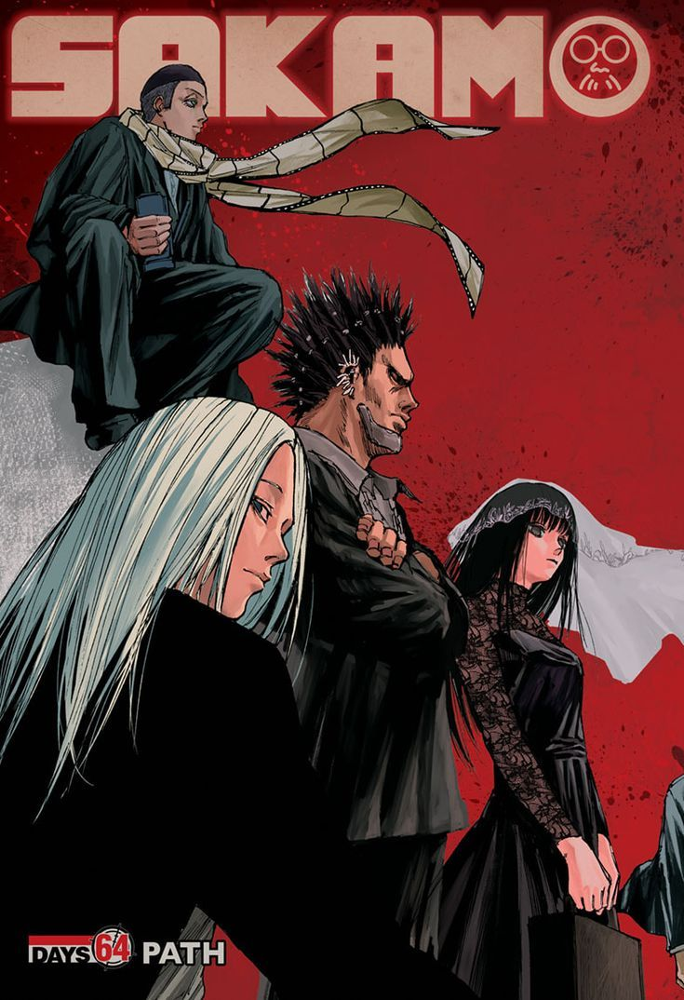
¿Sakamoto Days De Que Trata?
Taro Sakamoto era el asesino a sueldo más letal del mundo… hasta que se enamoró, se casó y se volvió un dueño de tienda con sobrepeso. Sin embargo, su pasado no lo deja en paz, y debe usar sus habilidades letales para proteger a su familia mientras intenta llevar una vida normal.
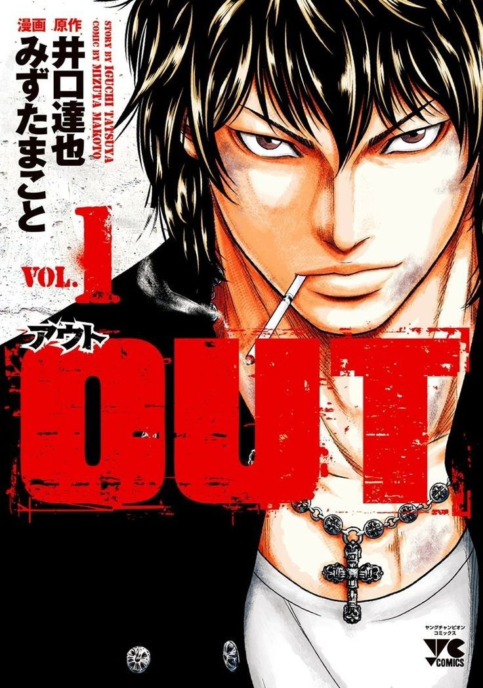
¿OUT De Que Trata?
"OUT" sigue la historia de Iguchi Tatsuya, un joven delincuente juvenil que, tras salir de un reformatorio, intenta rehacer su vida y mantenerse alejado de los problemas. Es enviado a vivir bajo la supervisión de un familiar, con la condición de no volver a meterse en peleas durante un año.
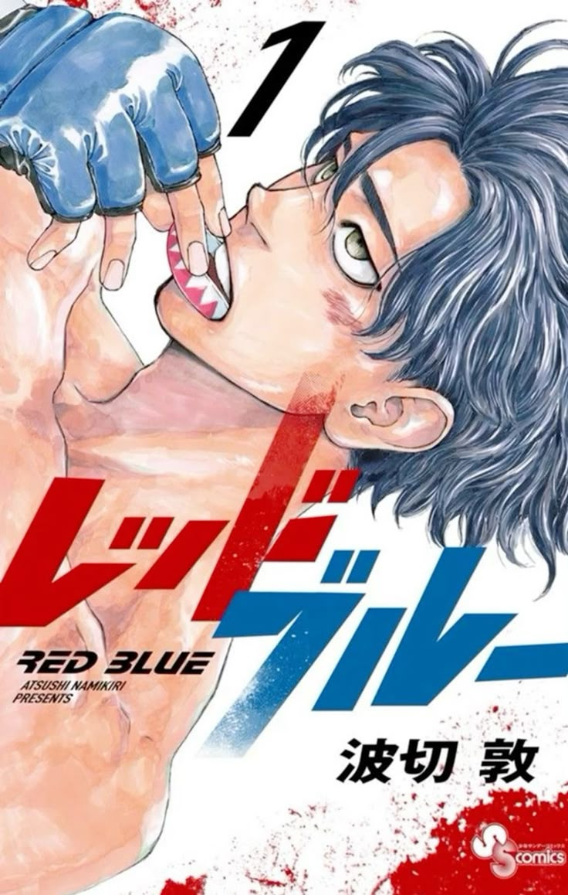
¿Red Blue De Que Trata?
Sigue la historia de un joven apasionado por el boxeo que entra al mundo del combate con ganas de superarse y demostrar su valía. Con intensidad física y emocional, el manga explora la competencia, el orgullo y los límites personales en un escenario deportivo realista.
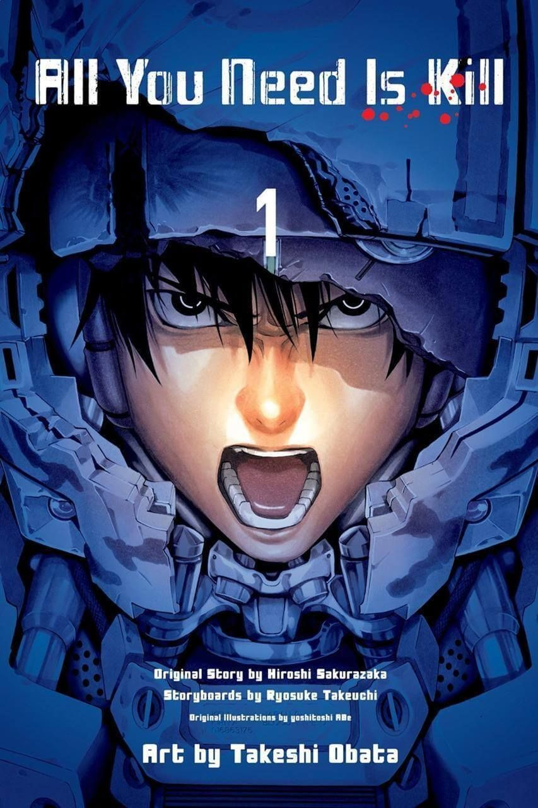
¿All You Need Is Kill De Que Trata?
En un futuro invadido por alienígenas llamados Mimics, el joven soldado Keiji Kiriya muere en combate… solo para revivir el mismo día una y otra vez. Atrapado en un bucle temporal, busca la forma de cambiar su destino y acabar con la guerra. Es una mezcla de acción, ciencia ficción y drama existencial.
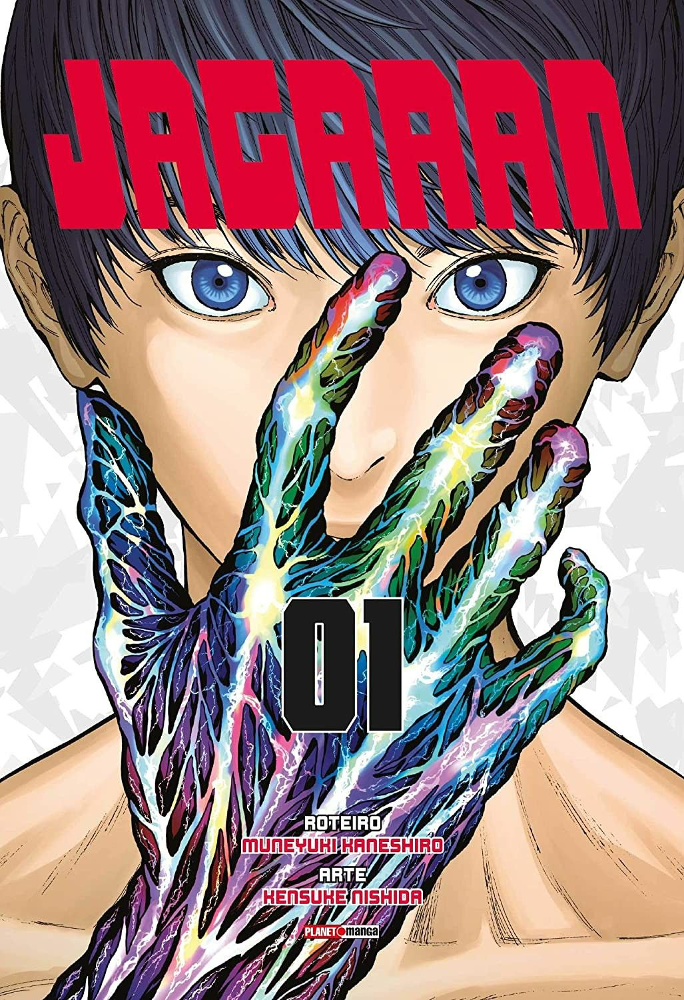
¿Jagaaan De Que Trata?
Shintarou Jagasaki es un aburrido policía de barrio que odia su vida... hasta que un extraño monstruo llamado “Fracturado” aparece. Cuando Jagasaki obtiene el poder de mutar su brazo en un arma letal, comienza una guerra interna entre su sed de violencia y su humanidad.
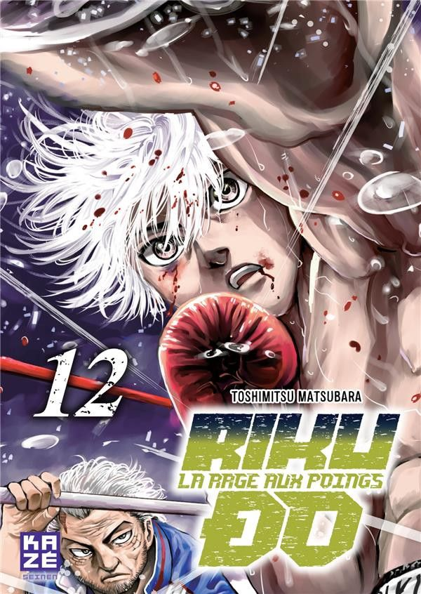
¿Riku-Do: Riku no Dō De Que Trata?
Riku Azami, un chico marcado por un pasado trágico, encuentra en el boxeo una vía para sobrevivir y enfrentar sus demonios. La historia se adentra en el mundo del boxeo profesional con un enfoque crudo, intenso y psicológico. Ideal para quienes buscan una historia de superación dura y realista.
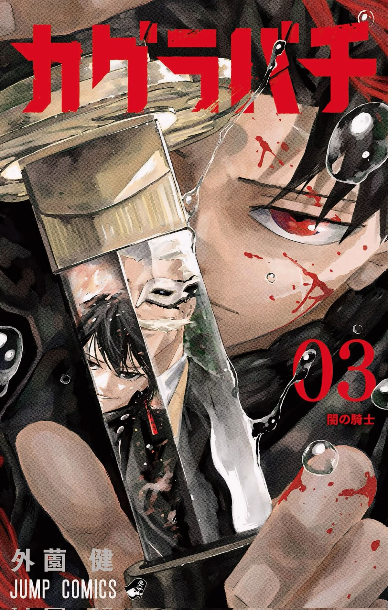
¿Kagurabachi De Que Trata?
Kagurabachi sigue a Chihiro Rokuhira, el hijo de un forjador de espadas legendarias. Tras un trágico evento que cambia su vida, Chihiro emprende un camino de venganza usando una espada especial forjada por su padre. Con una mezcla de magia, samuráis modernos y acción intensa, es una historia que combina fantasía oscura con temas clásicos de justicia y venganza.
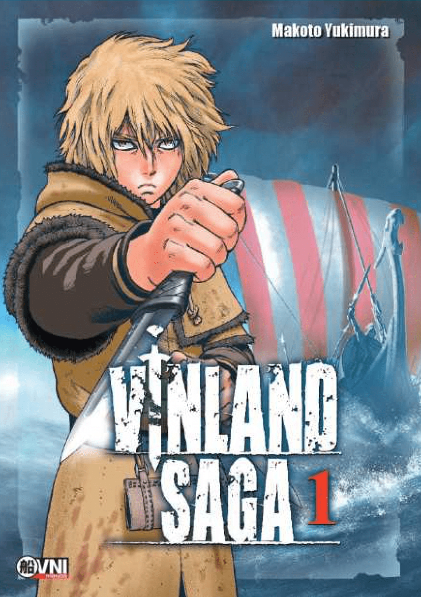
¿Vinland Saga De Que Trata?
La historia sigue a Thorfinn, un joven guerrero islandés que desde niño sueña con llegar a Vinland, una tierra lejana libre de guerra (inspirada en América del Norte). Sin embargo, tras un trágico suceso, su vida cambia por completo y su objetivo pasa de ser la exploración a buscar venganza contra Askeladd, el líder de una banda de mercenarios que mató a su padre, el legendario guerrero Thors.
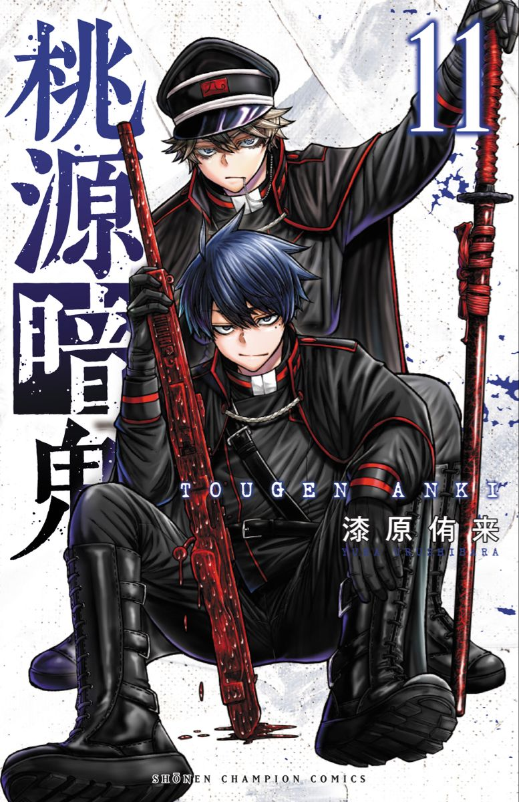
¿Tougen Anki De Que Trata?
Tougen Anki gira en torno a Ichinose Shiki, un chico problemático que descubre que desciende de los Oni (demonios japoneses). Cuando un ataque cambia su vida para siempre, se ve obligado a entrar en una escuela especial donde los Oni luchan contra los descendientes de Momotarou (el legendario cazador de demonios).
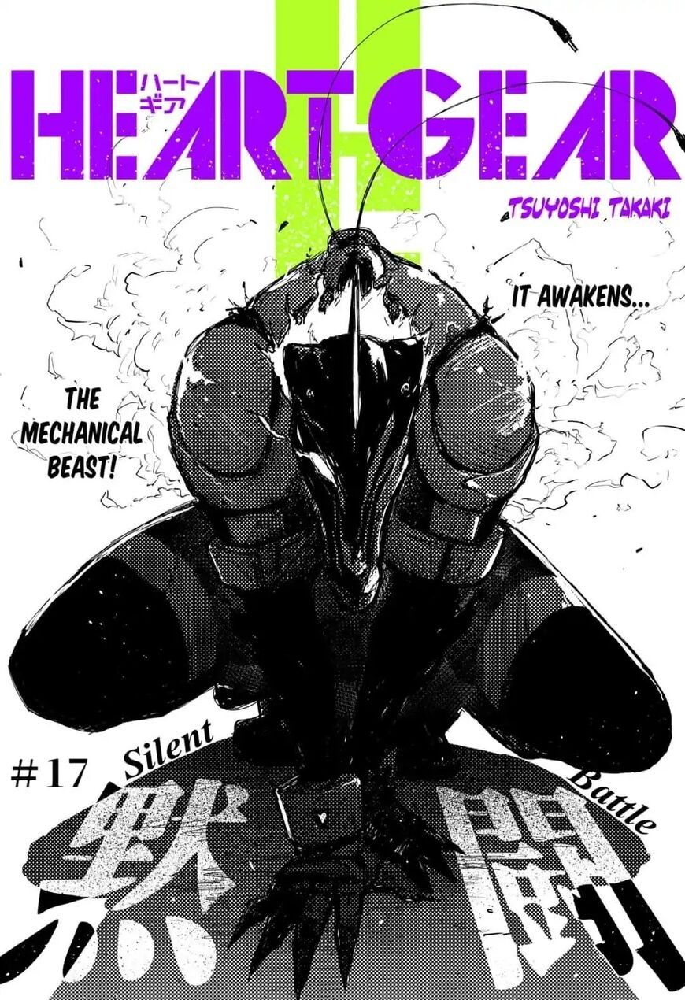
¿Heart Gear De Que Trata?
En un mundo postapocalíptico donde la humanidad casi ha desaparecido, una niña humana llamada Ruth vive con un robot llamado Gear. Todo cambia cuando aparece Chrome, un robot de combate con un pasado misterioso. Juntos, emprenden un viaje lleno de batallas, dilemas sobre la humanidad, y conexiones emocionales entre humanos y máquinas.
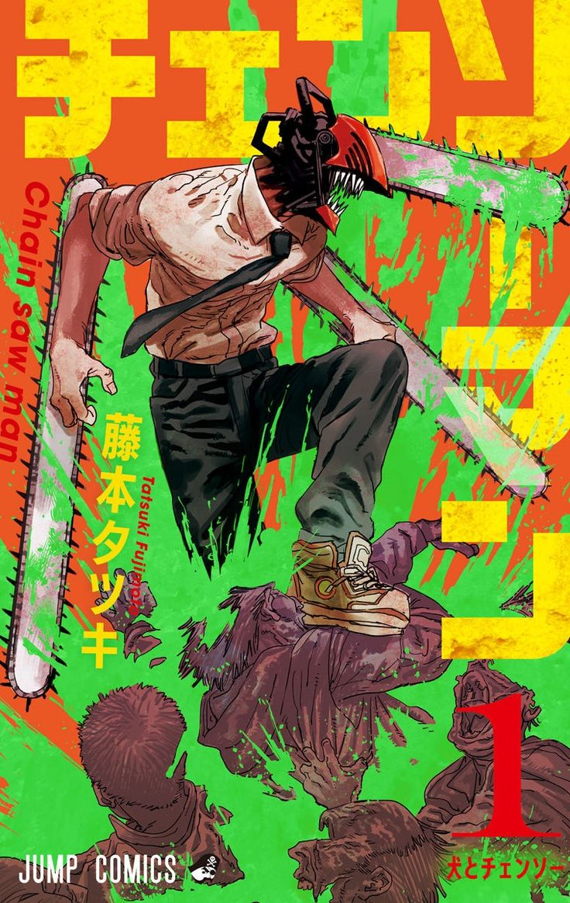
¿Chainsaw Man De Que Trata?
Sigue a Denji, un joven cazador de demonios pobre que trabaja para la yakuza. Tras ser traicionado y asesinado, su demonio motosierra llamado Pochita se fusiona con él, convirtiéndolo en Chainsaw Man. A partir de ahí, Denji se une a una organización gubernamental para combatir demonios mientras busca una vida mejor, amor y sentido en un mundo brutal y caótico.
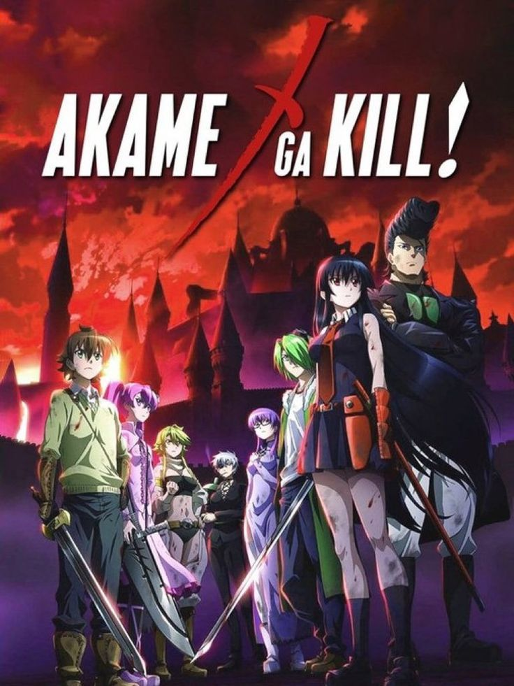
¿Akame ga Kill! De Que Trata?
Tatsumi, un joven guerrero, llega a la capital imperial buscando fama y fortuna, pero descubre la corrupción brutal del gobierno. Se une a un grupo de asesinos rebeldes llamado Night Raid, que busca derrocar al imperio. Con muertes impactantes, acción intensa y drama político, este manga es conocido por no tener miedo a matar personajes importantes.
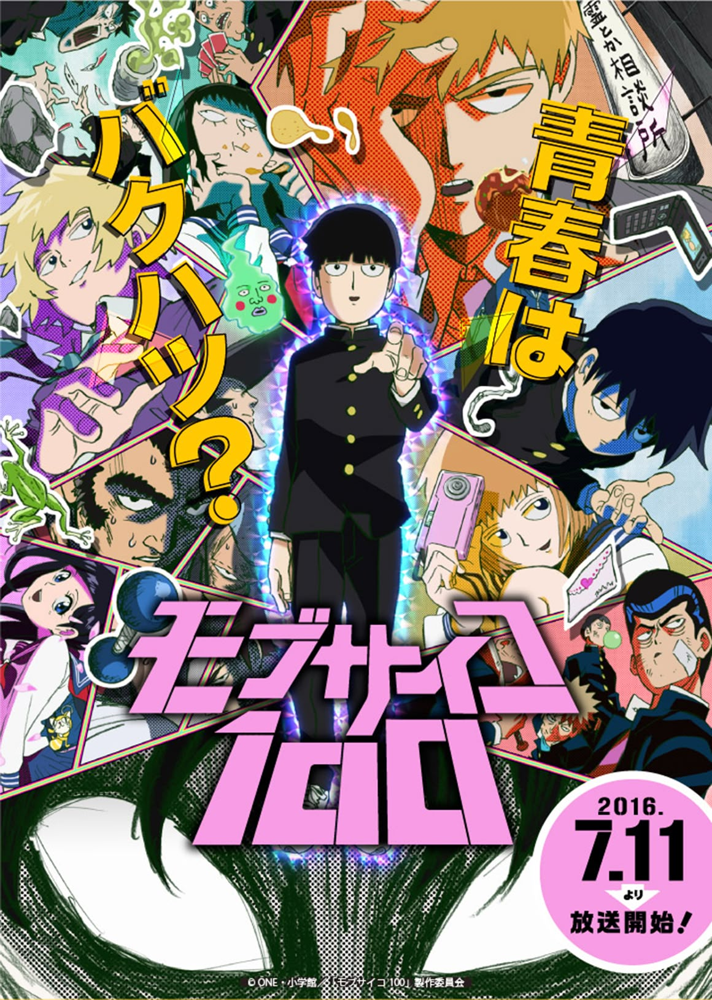
¿Mob Psycho 100 De Que Trata?
Shigeo "Mob" Kageyama es un adolescente con poderes psíquicos enormes, pero emocionalmente reprimido. Intenta vivir una vida normal y controlar sus emociones, porque cuando pierde el control, sus poderes explotan. Es una mezcla única de comedia, acción y reflexión emocional sobre identidad, crecimiento y empatía.
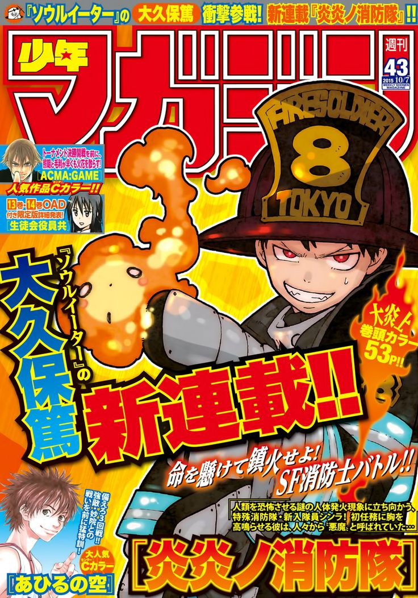
¿Fire Force De Que Trata?
En un mundo donde las personas pueden estallar en llamas de forma espontánea y convertirse en “Infernales”, un escuadrón especial de bomberos, la Fire Force, lucha contra este fenómeno sobrenatural. El protagonista Shinra Kusakabe, apodado “Pisadas del Demonio”, busca descubrir la verdad detrás de la muerte de su familia y el origen de estos incendios infernales.
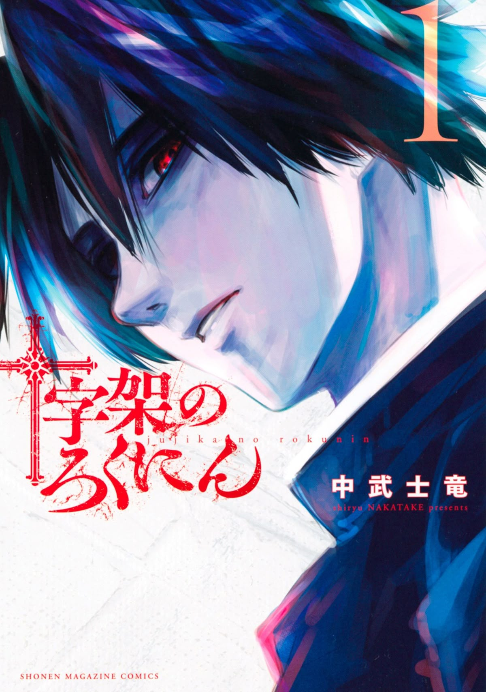
¿Juuouka no Rokunin De Que Trata?
Este manga, cuyo título puede traducirse como “Los Seis de la Bestia” o “Los Seis del Asesino”, cuenta la historia de un joven llamado Uruma Shun, quien sufre una tragedia extrema cuando unos delincuentes destruyen a su familia.
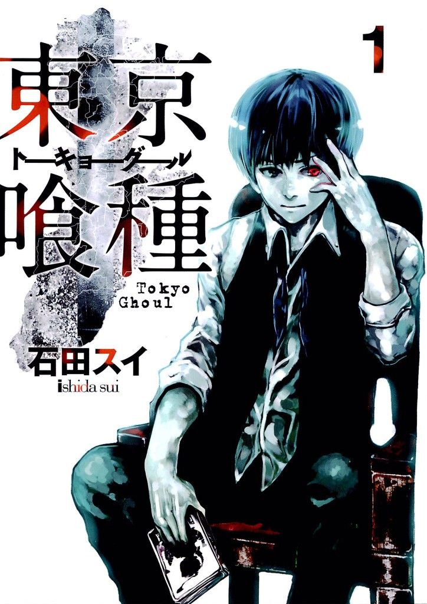
¿Tokyo Ghoul De Que Trata?
Kaneki Ken es un joven universitario que, tras un accidente, se convierte en mitad ghoul, una criatura que sobrevive comiendo carne humana. Atrapado entre el mundo humano y el de los ghouls, Kaneki debe adaptarse mientras enfrenta conflictos morales, batallas brutales y su pérdida de humanidad.
Una historia oscura, emocional y filosófica sobre identidad y monstruosidad.
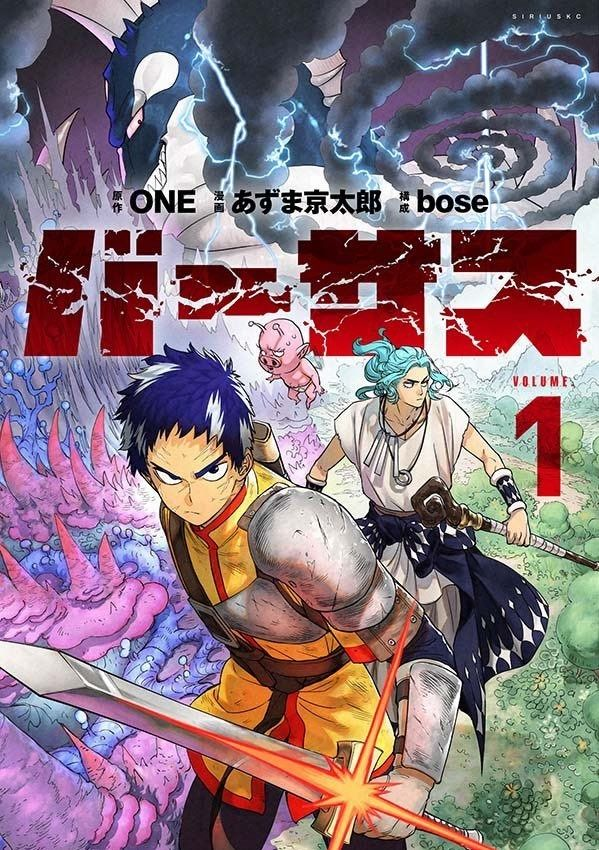
¿Versus De Que Trata?
Un mundo de fantasía dominado por los 47 Reyes Demonio. Un grupo de héroes humanos se enfrenta a ellos… pero el verdadero giro comienza cuando aparece un enemigo incluso más temible: los invasores de otro mundo.
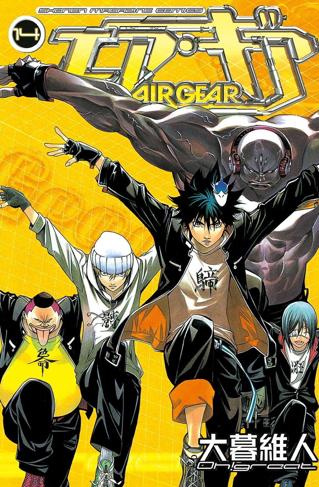
¿Air Gear De Que Trata?
En un mundo donde los Air Trecks (patines motorizados) permiten moverse a gran velocidad e incluso volar, Itsuki "Ikki" Minami entra al mundo de las bandas callejeras que compiten por territorio y reputación.Con combates espectaculares, romance, estilo urbano y una animación impresionante en su anime, Air Gear mezcla acción con cultura urbana y elementos tecnológicos.